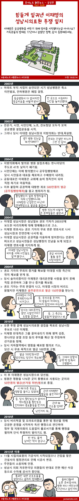

힘들게 일궈낸 이재명의 성남시의료원 투쟁 일지
등록/수정: 2019년 2월 13일 1시 38분

이재명은 변호사 시절 시민단체로 활동하여 힘든 싸움을 많이 한 것으로 알려져 있어요. 대표적인 사례가 파크뷰 사건과 지금 보신 성남시의료원 설립을 위한 투쟁이예요.
성남시가 도시 확장에 집중할 시절 병원들은 수익성이 떨어지는 문제들로 인해 이전 및 폐업을 결정하면서 응급상황에 대처하기 힘든 상황에 처해지자 공공병원을 지어 해결하자는 시민단체의 움직임이 생겨났어요. 그 시민단체의 대표로 이재명 시장이 나섰고, 지자체의 예산이 너무 많이 들어가 효율이 떨어진다는 반대의견과 맞서 싸우다 결국 조례가 통과되지 못하여 직접 성남시장이 되어 시행하게 되었지요.
이 사건으로 이재명 시장은 3번의 전과를 달게 되요. 그 스토리도 확인 하실 수 있어요.
– 수정 19.02.14 –
날치기 결과에 이해할 수 없었던 일부 시민들이 의회를 난입했다고 해요. 이재명 시장은 당시 의회에서 같이 보고 있었는데 난입하지 안았음에도 연대책임을 물었다고 하네요. 이 조례는 시민들이 직접 진행한 조례이며 흔한사례가 아닌 만큼 시민들의 간절함도 컸다고 합니다.
2006년 재임된 이대협 시장은 의료원 설립을 공약으로 걸고도 당선 후 반대를 했으며, 2008년 평가에서 공약이행도 미진행 34% 부진 39% 진행중 22% 완료 5%를 기록하여 매우 낮은 수준이었다고 하네요. 처음부터 불가능한 공약을 발표한 것 또한 문제였지요.